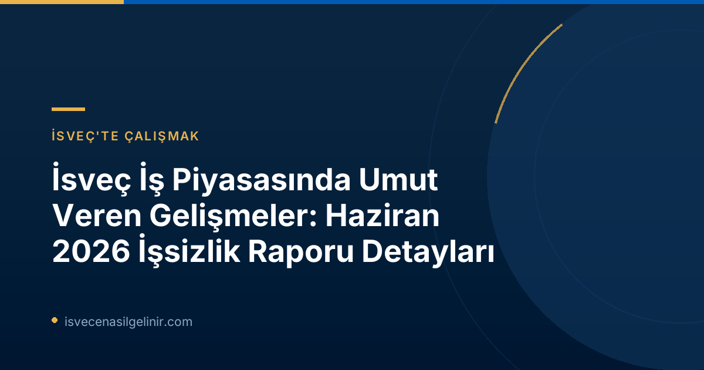

Haziran 2026 İşsizlik Raporu Öne Çıkanlar
- Genel İşsizlik Azaldı: Haziran 2026'da işsizlik oranı %6,4'e geriledi (Haziran 2025'te %6,9).
- İşsiz Sayısı Düştü: İşsiz sayısı 344.000 olarak kaydedildi, geçen yıla göre 22.000 kişilik bir azalma.
- Yurt Dışı Doğumlular İçin Pozitif Trend: Uzun süreli işsiz yurt dışı doğumlu bireyler arasında işsizlikte belirgin düşüş gözlendi.
- İstihdam Artışı: Geçen yıla göre 3.000 kişi daha fazla iş buldu.
İsveç İşgücü Piyasasında Genel Durum
Arbetsförmedlingen'in Haziran 2026 raporu, İsveç ekonomisinin işgücü piyasasında istikrarlı bir iyileşme kaydettiğini gösteriyor. Geçen yılın aynı dönemine kıyasla işsiz sayısında 22.000 kişilik bir azalma ile toplam 344.000 kişi işsiz olarak kayıtlı bulunuyor. Bu düşüş, daha önceki prognostik gelişmelerle uyumlu seyrediyor.| Veri Kategorisi | Haziran 2026 | Haziran 2025 | Değişim |
|---|---|---|---|
| İşsizlik Oranı | %6,4 | %6,9 | -%0,5 puan |
| Kayıtlı İşsiz Sayısı | 344.357 | 366.496 | -22.139 |
| 18-24 Yaş Arası Genç İşsizlik Oranı | %7,3 | %7,8 | -%0,5 puan |
| 18-24 Yaş Arası Genç İşsiz Sayısı | 39.134 | 41.939 | -2.805 |
Yurt Dışı Doğumlu Bireyler ve İş Piyasası
Rapordaki en dikkat çekici gelişmelerden biri, yurt dışı doğumlu bireylerin iş piyasasındaki olumlu seyri. Özellikle Avrupa dışı ülkelerde doğmuş ve uzun süreli işsizlik yaşayan (en az bir yıl) kişiler arasında belirgin bir düşüş gözlemleniyor. Haziran 2026 itibarıyla bu gruptaki işsiz sayısı 68.000 olup, geçen yıla göre 6.000 kişilik bir azalma kaydetmiştir. Bu durum, bu grubun iş bulma konusunda iç piyasada doğmuş uzun süreli işsizlere göre daha pozitif bir gelişim gösterdiğini ortaya koyuyor. İsveç'e entegrasyon ve vatandaşlık süreçleri hakkında bilgi almak isteyenler için İsveç Vatandaşlık Sınavı sayfasını ziyaret etmelerini öneririz.Bölgesel İşsizlik Farklılıkları
İşsizlik oranları İsveç genelinde düşüş gösterse de, bölgesel farklılıklar devam ediyor.En Yüksek İşsizlik Oranına Sahip Bölgeler (Haziran 2026)
- Skåne: %8,4
- Södermanland: %8,0
- Västmanland: %7,8
İş Bulanlar ve Yeni İş Arayanlar
Haziran 2026'da Arbetsförmedlingen'e yeni kayıt yaptıran iş arayan sayısı geçen yıla göre 1.000 kişi azalarak 43.000 olarak kaydedildi. Bu durum, piyasadaki işgücü hareketliliğinin bir göstergesi olabilir. En sevindirici haberlerden biri ise, 36.000 kişinin iş bulmuş olması; bu, geçen yılın aynı dönemine göre 3.000 kişilik bir artış anlamına geliyor.| Veri Kategorisi | Haziran 2026 | Haziran 2025 | Değişim |
|---|---|---|---|
| Yeni Kayıt Yaptıran İş Arayan Sayısı | 42.980 | 44.099 | -1.119 |
| İş Bulan Kişi Sayısı | 35.673 | 32.405 | +3.268 |
| İşten Çıkarma Bildirimi Alan Kişi Sayısı | 2.857 | 4.606 | -1.749 |
Uzun Süreli İşsizlikteki İyileşme
Bir yıldan uzun süredir işsiz olan kişi sayısı 148.000'e düşerek geçen yıla göre önemli bir iyileşme gösterdi. Bu gruptaki düşüş, uzun süreli işsizliğe yönelik politikaların ve piyasadaki talebin olumlu etkilerini yansıtmaktadır. İsveç'te kalıcı olarak yaşama ve çalışma hedefi olanlar için sverigemedborgarskapsprov.com rehberliğini takip etmek faydalı olacaktır.Genç İşsizliği Azalmaya Devam Ediyor
18-24 yaş arası genç işsizlerin sayısı Haziran 2026'da 39.000'in biraz üzerinde seyretti. Geçen yıla göre yaklaşık 3.000 kişilik bir azalma ile genç işsizlik oranının %7,3'e düşmesi (geçen yıl %7,8 idi) gençlerin istihdam piyasasına katılımının arttığını gösteriyor.Arbetsförmedlingen İstatistiklerinin Kapsamı ve Yasal Not
Arbetsförmedlingen'in aylık basın bültenleri, ajansın kendi operasyonel istatistiklerini yansıtmaktadır. Bu veriler, kayıtlı işsizler ve yeni bildirilen açık iş ilanları gibi kurum içi kayıtlara dayanmaktadır. Önemli bir not olarak belirtmek gerekir ki, Arbetsförmedlingen istatistikleri İsveç'in resmi istatistikleri kategorisine girmez. Ülkenin resmi işsizlik istatistikleri, İsveç İstatistik Kurumu (SCB) tarafından İşgücü Araştırması (AKU) kapsamında yayınlanmaktadır. Ayrıca, 2024 yılında işgücü büyüklüğünü ve dolayısıyla göreceli işsizlik seviyesini hesaplama metodolojisi değişmiş olup, 2026 istatistikleri 16-66 yaş aralığını kapsarken, 2025 istatistikleri 16-65 yaş aralığını kapsar.İsveç'te İş Bulma Fırsatları ve Gelecek Beklentileri
Haziran 2026 işsizlik raporu, İsveç iş piyasasında süregelen olumlu gelişmeleri teyit ediyor. Özellikle belirli demografik gruplar ve bölgelerdeki ilerlemeler, İsveç'e gelmek ve burada bir kariyer kurmak isteyenler için cesaret verici nitelikte. İş arayışınızda güncel istatistikleri takip etmek, doğru stratejiler geliştirmek ve İsveç yaşamına dair yasal süreçleri anlamak büyük önem taşımaktadır. Arbetsförmedlingen'in raporları, iş piyasasının nabzını tutmak için değerli bir kaynak sunmaktadır.Referanslar:
İsveç'te Hayat Kurma Yolunda İlk Adım
İsveç'e göç, çalışma ve vatandaşlık süreçleri hakkında en güncel ve detaylı bilgilere ulaşmak için kaynaklarımızı inceleyin.